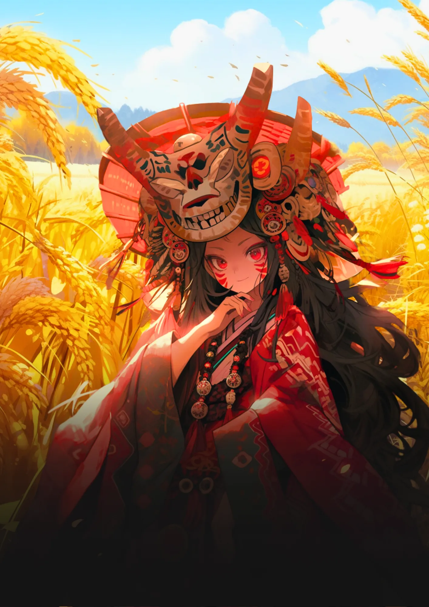
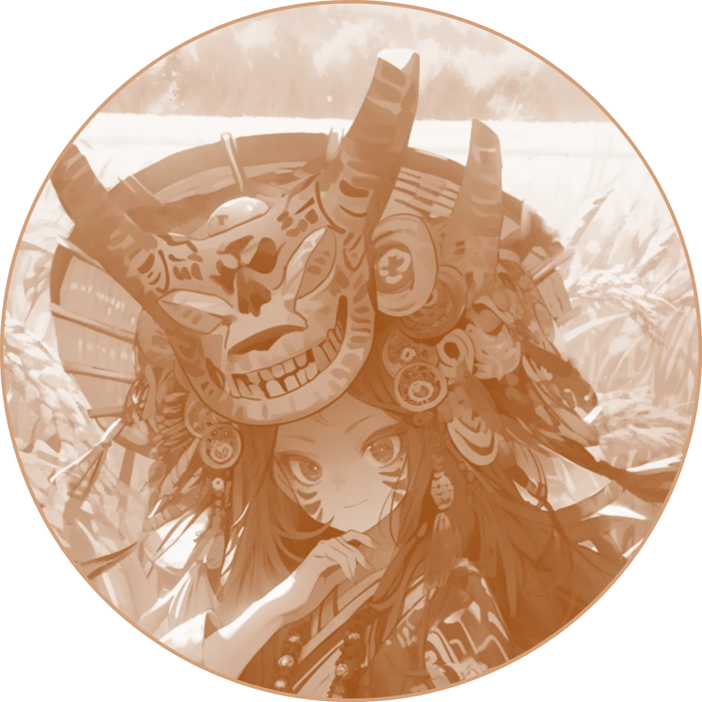
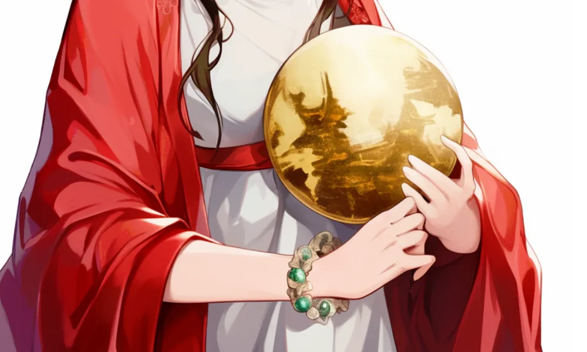
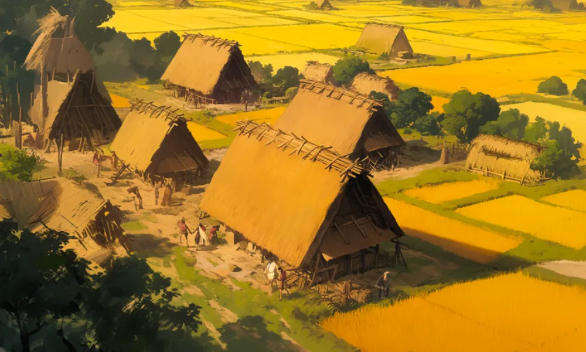

卑弥呼
国を鎮めた巫女
鬼道で統治なり
占いで色々決めてたらしい。現代だったらインチキって言われてたかもしれないね。
稲作伝来
背景が稲なのは弥生時代に稲作が大陸から伝来したため。日本人の愛するお米はこの頃から！
[人物プロフィール]
生没年
170年～248年
時代
170年～248年
身分
女王
鏡を使って占いをしてたんだよ。

 卑弥呼ってどんなひと？
卑弥呼ってどんなひと？
古代日本の女王で、邪馬台国を統治しました。中国の史書『魏志倭人伝』に記述があり、神秘的な存在として語られています。卑弥呼の統治は、古代日本の歴史において重要な役割を果たしました。
コラム
（カード右上）今汝を以て親魏倭王と為し、金印紫綬を仮し、装封して帯方の太守に付し仮授せしむ。
カードの効果解説！
三角縁神獣鏡
三角縁神獣鏡は、古墳時代に作られた青銅鏡で、神や獣の模様が描かれています。この鏡は古代の権力者が持っていたとされ、当時の信仰や文化を知る手がかりとなります。
邪馬台国
邪馬台国は、古代日本に存在したとされる国です。卑弥呼という女王が統治し、中国の歴史書「魏志倭人伝」にも記載されています。邪馬台国の存在は、今も多くの謎に包まれています。

弥生時代ってどんな時代？
弥生時代ってこんな時代 ってのをなんとなく。時代かぶってたりしたら関連人物 との繋がりについて纏める感 じで。弥生時代ってこんな時代 ってのをなんとなく。時代かぶってたりしたら関連人物 との繋がりについて纏める感 じで。


クイズ！：卑弥呼が魏（中国）の皇帝からもらったものはなんでしょう？